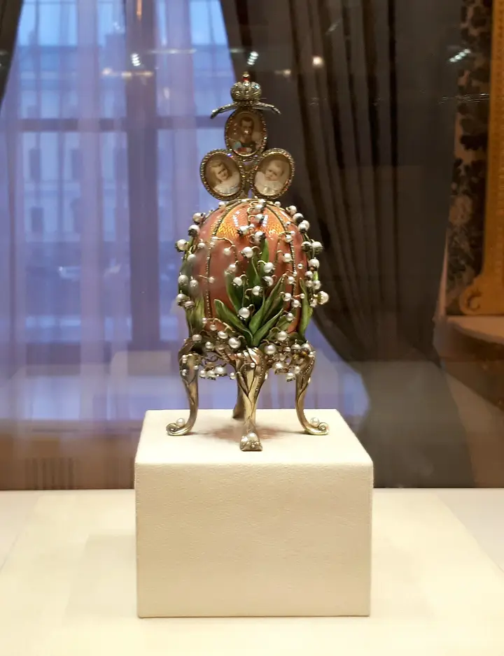

Фото: GAlexandrova, CC BY-SA 4.0 · Wikimedia Commons
Музей · Центр
Музей Фаберже
Императорские пасхальные яйца и ювелирка в Шуваловском дворце — красиво, нарядно и не слишком долго.
- ₽ · до 1 500 ₽ на человека
- Новое в каталоге
- в 1 плане
Позвать сюда: Музей ФабержеОткрыть в каталоге: Музей ФабержеМаршрут до места: Музей Фаберже
Адрес и детали
- Адрес
- наб. реки Фонтанки, 21
Открыть на Яндекс Картах (в новой вкладке) - Метро
- м. Гостиный двор
- Район
- Центр
- Цена
- до 1 500 ₽ на человека
- Проверено
- работает — проверили в октябре 2026
Планы с этим местом 1
- Музей Фаберже · Музей · м. Гостиный двор
- 6 минут пешкомПалкинъ · Ресторан
Императорские пасхальные яйца в Шуваловском дворце, а через 6 минут пешком — парадные залы ресторана с дореволюционной историей на углу Невского.
Открыть план: Фаберже и «Палкинъ»Позвать сюда: Фаберже и «Палкинъ»
Фото: GAlexandrova, CC BY-SA 4.0 · Wikimedia Commons

Входит в подборки
Похожие рядом


Что ещё рядом

Как позвать
- Выбери план, место или событие — в карточке адрес, цены и маршрут в Яндекс Картах.
- Нажми «Позвать сюда» — соберётся приглашение-игра для свидания или голосование для компании.
- Отправь ссылку в любой мессенджер: тебе ответят, а компания отметит, куда и когда может. Бесплатно и без регистрации.